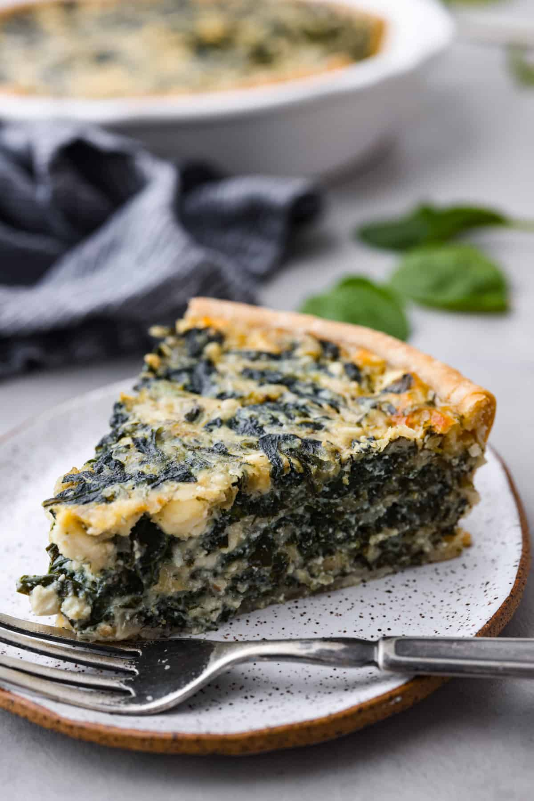

Spinach Pie

Description
The spinach pie is a pie made of spinach
My dad makes it with spinah and bacon and it taste awesome
Ingredients
- 1 tablespoon butter
- 1 pound fresh spinach
- 12 eggs
- salt and freshly ground black pepper to taste
- 1 pinch of cayenne pepper
- 6 slices bacon, chopped
- half an onion, diced
- 1 pinch of salt
- 3 ounces crumbled feta cheese
Steps
- Preheat oven to 175 degrees C
- Heat butter in a large oven-safe skillet over high heat. Toss spinach in hot butter until wilted, about 30 seconds. Drain spinach well and squeeze it as dry as possible. Transfer to a cutting board and chop.
- Beat eggs in a bowl with salt, black pepper, and cayenne pepper until thoroughly combined.
- Place bacon in the same skillet used to cook spinach and cook over medium-high heat, stirring occasionally, until bacon has rendered its fat and is almost crisp, 5 to 8 minutes. Use a paper towel held in a tongs to remove excess bacon grease. Reduce heat to medium; saute onion with bacon and a pinch of salt until onion is translucent, about 5 more minutes.
- Saute chopped spinach with bacon and onion until spinach is hot; pour in eggs. Use a wooden spoon to distribute spinach evenly throughout the eggs. Sprinkle feta cheese over mixture.
- Bake in the preheated oven until eggs are set, 10 to 15 minutes. Top may still be a little wet.
- Turn on oven's broiler. Broil pie until top is lightly golden brown, 2 to 3 minutes.